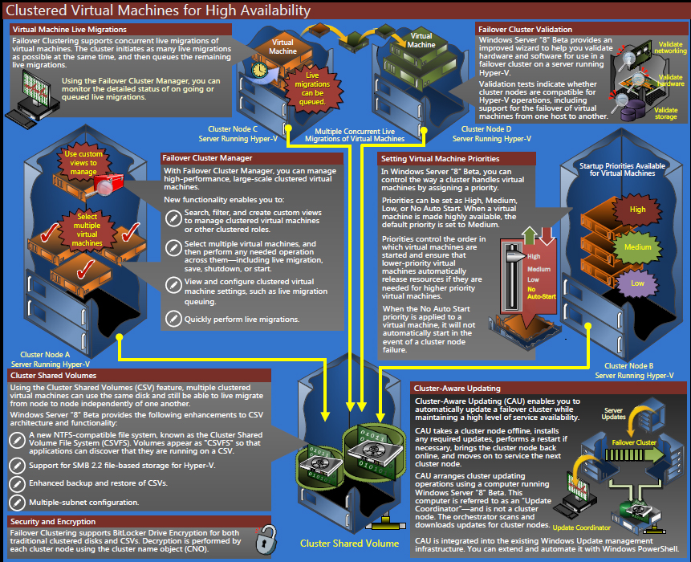
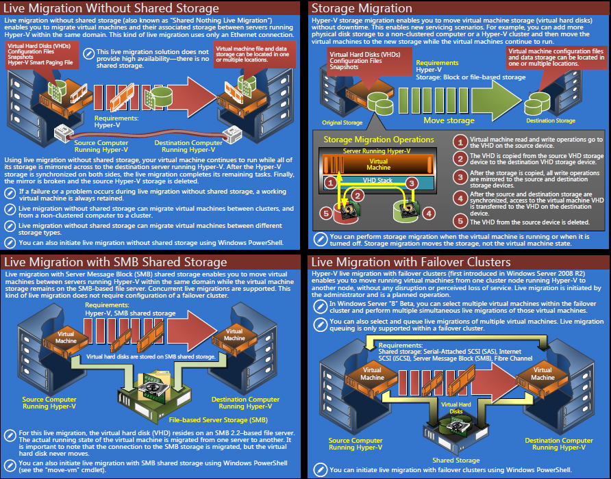
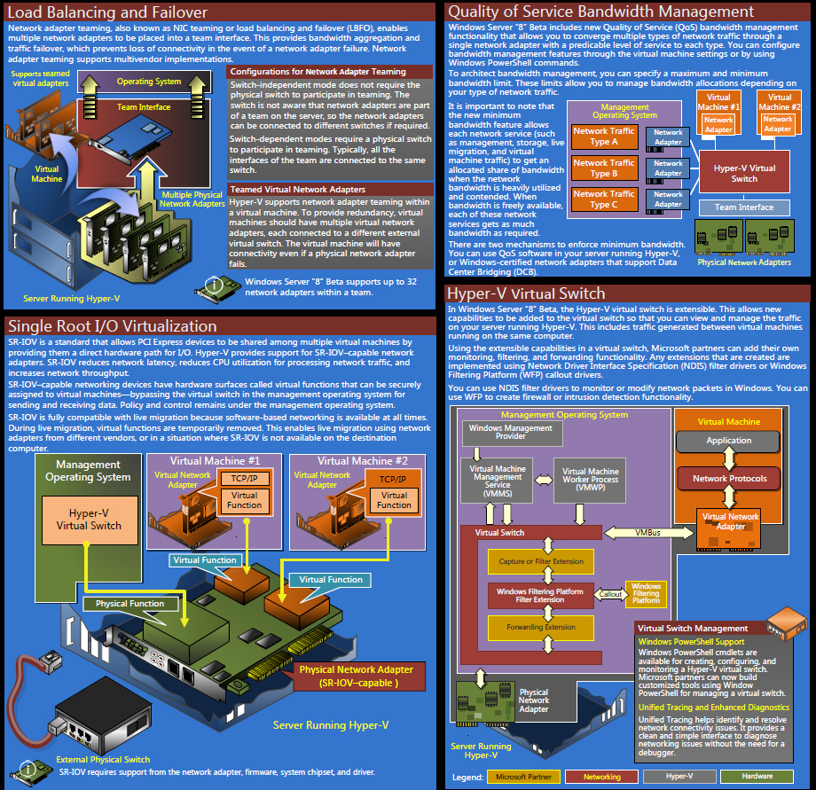
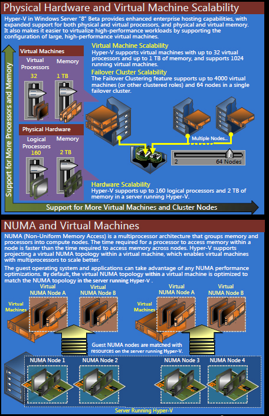
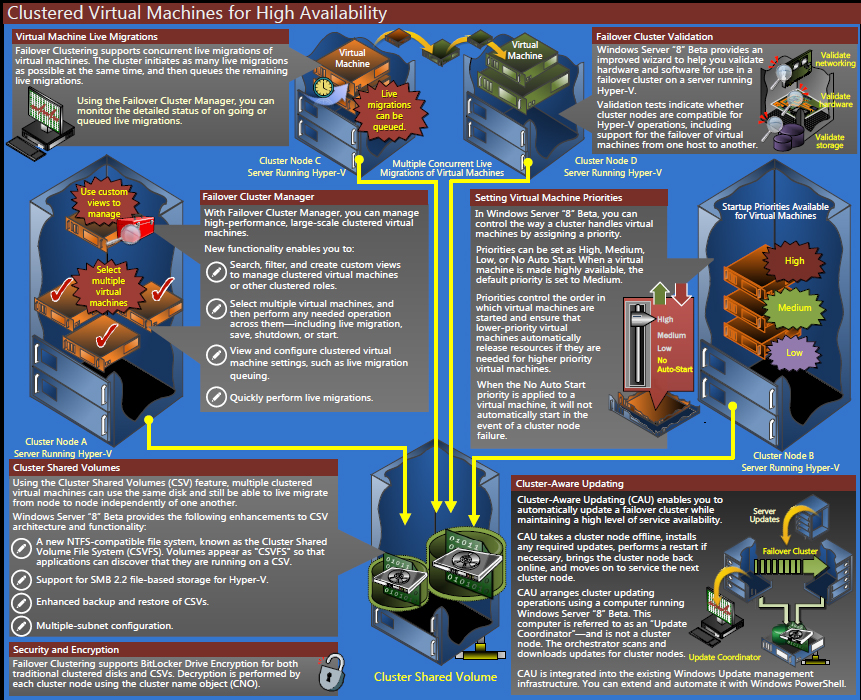
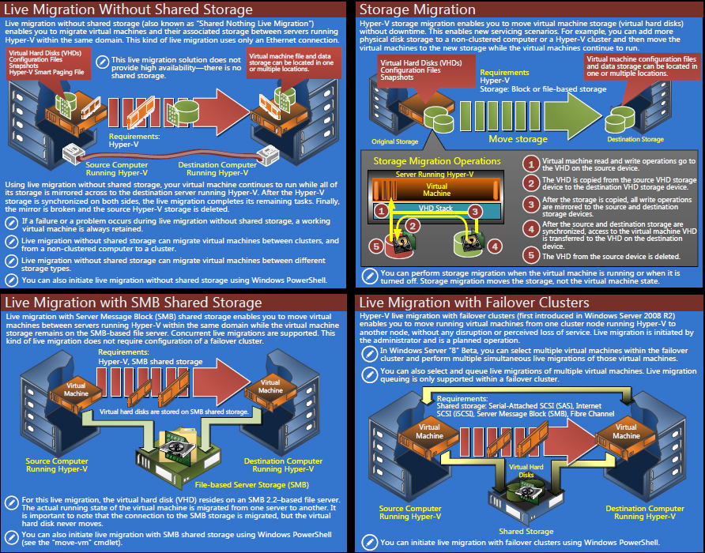
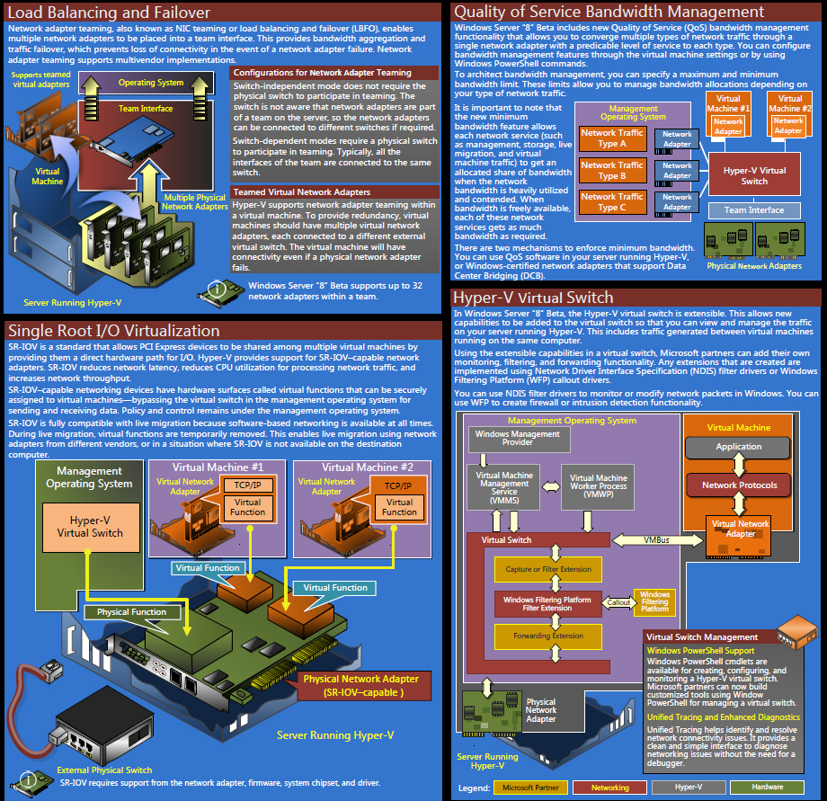
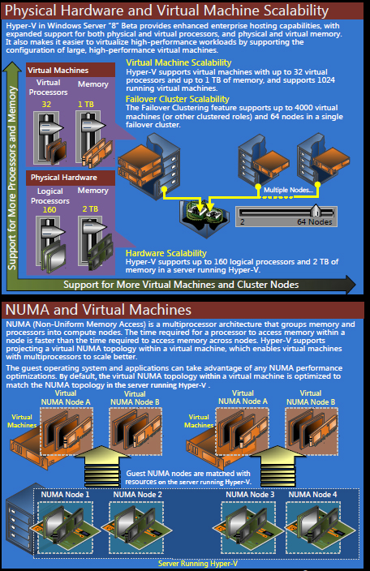

Virtualization
HyperV Server Virtualization
Virtualization comes in multiple flavors these days. Picking the right choice doesn't have to be difficult or expensive. In Fact, Tek-Hut makes it easy.
Some advantages of Server Virtualization are:
- Lower number of physical servers - you can reduce hardware maintence costs because of a lower number of physical servers
- Decrease server recovery time by backing up the entire VM
- Develop a standard virtual server build that can be duplicated which will speed up server deployments or testing
- Maintain legacy software without maintaining legacy hardware
- Create a 100% resilient fault tolerent Server enviroment
- Deploy each application within its own "virtual server", minimizing the impact a specific application may have with other applications
Below are some diagrams on Server 8 Virtualization technologies
 






